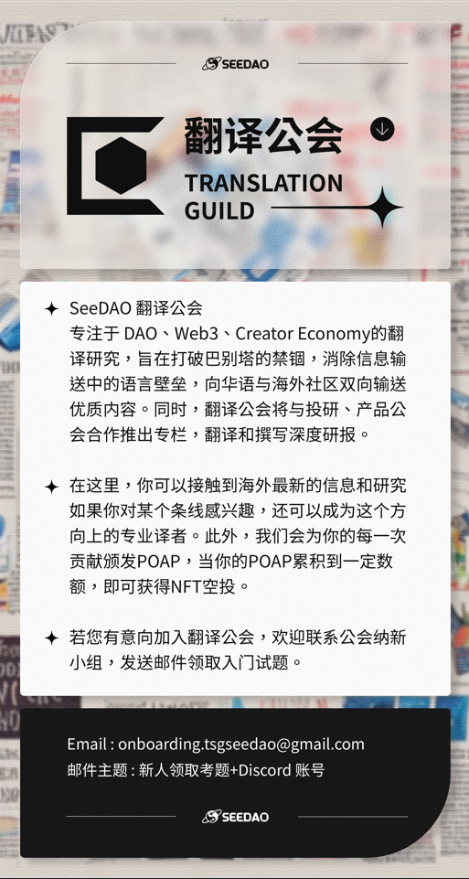
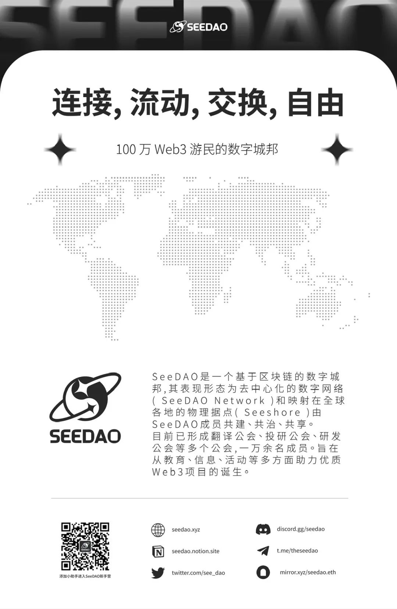

SeeDAO | Web3 身份和 NF.TD 的未来
作者: 翻译公会Theseus
发布时间: 2023-08-07 13:38:03
分类:
SeeDAO, SeeDAO翻译公会, Web3, DAO
原文链接：https://paragraph.xyz/@nftd/web3-identity-and-the-future-of-nftd
早期互联网通过域名、统一认证用户名（例如 AOL 的 Screen Name）以及邮件地址组建身份。在过去的十年里，我们可以看到一个重大的转变，人们开始在多个社交平台上（twitter、Facebook、Instagram、LinkedIn、Medium、Discord等）采用个人档案。
在现有的 Web2 档案和 UGC 模式基础上，Web3 身份允许由公共交易支持的、独有的、可验证的自我主权形式、所有权和声誉。一个人完整的数字身份构成已经发生了变化，现在包括：
“链接在个人简介中”（link in bios）的做法广泛流行是因为人们需要在一个地方聚合多个链接，而现有的应用程序个人资料中的空间有限，无法满足这种需求。 同样地，人们也在寻找方法来提高他们所属的加密社区的知名度，比如一起在个人资料中标记他们所属的 DAO、将代币列在个人资料中、将姓名（甚至地理位置）替换为 ENS 地址。可惜这些方式都无法被验证，导致在本已混乱不堪、缺乏信任的生态系统中充斥着骗子和怀疑论者。 社交网络和身份正在从职场和校友圈向社区和凭证转变。DAO 和加密货币社区正在颠覆以往的组织系统，同时它们可以围绕共同的想法和价值观进行合作。超脱年龄、边界和其他物理阻碍的协作让匿名贡献者们能够建立他们自己的数字声誉和链上信用，进一步推动加密经济。 这一影响不仅出现在职场，包括杜克大学、麻省理工学院和佩波代因大学在内的大学也已经开始尝试使用加密证书，并将证书放置到区块链上。2021 年秋季，斯坦福大学向完成其区块链入门课程的学生发放了 ERC-721 CNFT（课程 NFT）。针对区块链领域的教育项目，如RabbitHole、Odyssey和Decrypt，他们在学员完成课程后，也会自然地发放 NFT 作为凭证。 这仅仅是个开始，尽管现有基础设施可以用于颁发和记录加密凭据，但目前还缺少一个策展层来展示这些凭证。使用像 Etherscan 这样的区块浏览器来理解钱包的交易是非常麻烦的。毕竟，并不是每笔转账、铸币、存款和提现都与您的 Web3 身份相关。在数百笔交易中，可能只有少数几笔是有实质意义的。 我们的目标是通过为这个领域中的身份添加一层可信和清晰的验证。来促进更有意义的人际关系。我们正在通过熟悉的方式：“链接在个人简介中”（link in bios），构建一种经过筛选的个人链上记录的 Web3 个人资料。通过突出您在 DAO 和其他代币化社区中的成员身份，在社交和职业网络中建立验证的连接，丰富您的数字身份的加密凭证。减少个人链上活动的视觉复杂性是这个新领域合法化的关键。 我们即将推出重要产品更新为您提供加密凭证管理功能。NF.TD 计划不依赖协议和标准，以便我们支持各种类型的凭证。Web3 身份感觉相当嘈杂，但它并不是只能这样。通过区块链支持的活动实现自我主权、无边界协作和信任的承诺是一个值得建设的未来。 如果你对此感兴趣，并想与我们一起讨论，请联系nf.td/victor或者nf.td/steph。 请关注：nf.td/nftd 非常感谢我们早期的社区成员和支持者（private beta 阶段）： 0xen, alex, austin, ben, benlim, bgrill, brianjckim, chris, clubcpg, corbin, dan, david, dinislam, dylan, dwr, eli, etekis, gabrielayuso, gaby, giu, guddy, hiroki, ian, isabelle, ishika, jack, jake, jaren, jayme, jcdenton, jeff, jozhu, jsson, kat, keith, kiyo, koloz, kostas, kuupottery, les, lin, lou, luke, madhur, markus, marlon, matt, matthew, max, mihai, mika, mircea, montana, naveen, nicho, nico, nonlinear, nybble, playlo, pug, ravi, rish, sathaxe, sds, shai, shotbydanni, shriphani, steak, tharun, tjack, todd, tyler, varun, vicc, winnie, xtina, yusuke, zach. 
